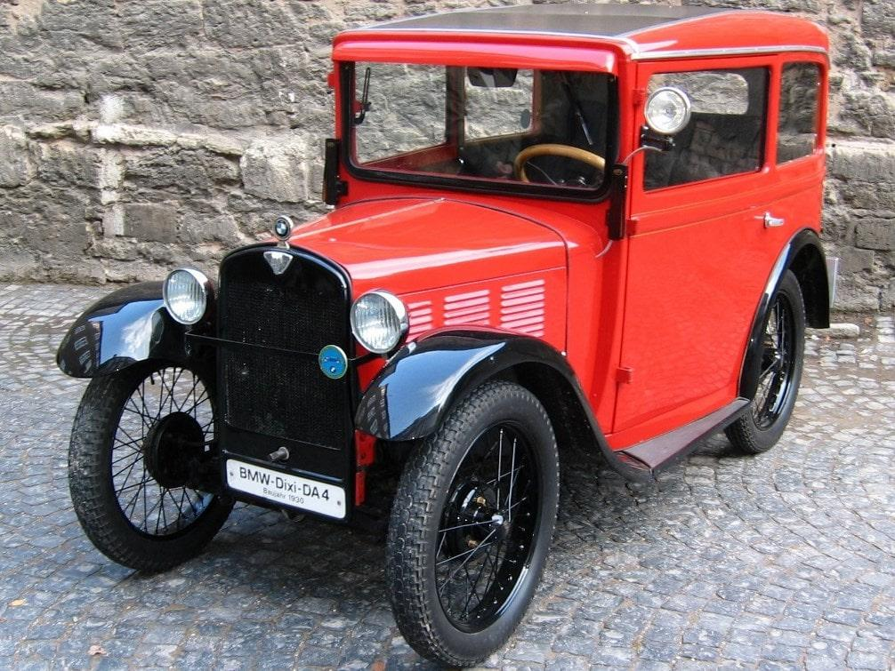

BMW Dixi
Dixi
Первая машина
Dixi - это торговая марка автомобилей, производимых компанией Automobilwerk Eisenach (автомобильный завод в Айзенахе) с 1904 года. В сложных экономических условиях 1920-х годов компании было трудно продавать модели 6/24 и 9/40. Поэтому производитель решил выйти на рынок небольших автомобилей и в 1927 году подписал лицензионное соглашение с Austin Motor Company на создание варианта Austin 7 . Был согласован уровень производства 2000 автомобилей в год, и Дикси платила Остину роялти за каждый произведенный автомобиль.
Самая первая машина BMW

Dixi
Первые 100 автомобилей были поставлены Austin в виде комплектов, но к декабрю 1927 года с конвейера сошли первые автомобили, официально произведенные Dixi, DA-1 3 / 15PS. Обозначение DA расшифровывалось как Deutsche Ausführung, что означает немецкая версия; 3/15 указано налогообложение и фактическая мощность в лошадиных силах. За исключением того, что автомобиль был левосторонним и использовался метрический крепеж, он был почти идентичен Остину. Доступны варианты кузова: купе, родстер, турер и седан, а некоторые шасси отправлялись внешним производителям кузовов. Большинство автомобилей покинули завод в качестве туристических.
Автор: © Дрозд Алексей Игоревич